「Lostorage incited WIXOSS」
Column of episode 09
Episode 9 Aired!
Everyone else who looked up Wixoss Abyss Truth,
how are you all doing this evening?
 I wonder if typing in katakana would give more results
I wonder if typing in katakana would give more results
About Mayu
I'm sure that some of you viewers started with Lostorage as your first series, so let's do some review.
Wixoss was originally a regular card game (As it is now, more or less).
In that world, there was a girl named Mayu who died all alone, never having known the touch of another.
She was given the Wixoss game, but could only pretend to play, as there was nobody to be her partner.
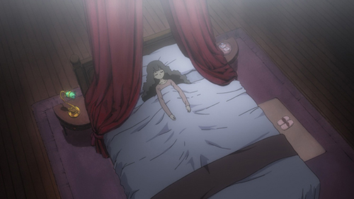
Thus she began to see the LRIGs as her friends, and eventually they gained a will of their own.
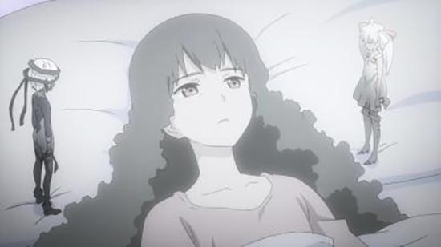
That's when she made a certain rule.
"If you win, your body will be taken over to grant your wish."
"If you lose, your wish will never come true."
And then, she drew her very last breath.
But then she found herself within a white room. It's commonly known as the room with white windows.
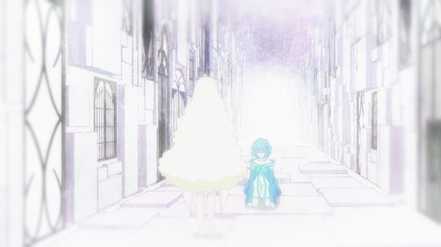 She became a Game Master
The Game Master of "The card game that can grant your wishes" Wixoss. The girls who gained LRIGs with a will of their own were called "Selectors (those who select)".
The girls who entered that battle fought to grant their pure wishes. They knew not of the penalty for losing, nor that they would not be granting their own wishes.
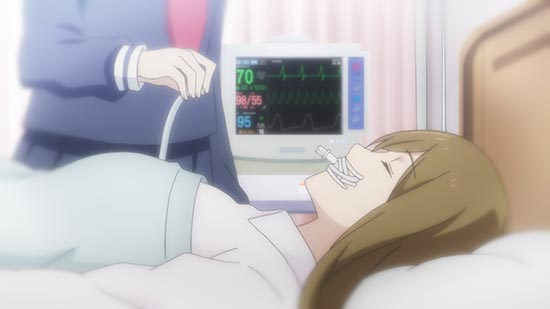 Even Kiyoi's wish to save her friend. Her salvation was in death.
Thus many Selectors began to battle, many LRIGs became human, and many wishers' desires were granted "regardless of the form they took".
And then, a girl named Kominato Ruuko purified the battle Mayu created with her wish of "Turning all the LRIGs human".
selector infected WIXOSS - selector spread WIXOSS
That was one story about the end of the game of darkness.
Mayu may have been purified, but nobody knows what came of the swirl of anger, pain, curses, and souls that never made it back from that battle.
The darkness did not disappear into the light.
It created yet another new battle.
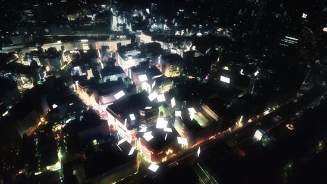 Lostorage incited WIXOSS
After all this, it almost feels like the blame should be on Wixoss.
さて、そんな物語selector infected WIXOSS － selector spread WIXOSSは12月10日（土）にニコニコで一挙放送されます。
If you haven't yet seen it, then please check it out.
Let's get in Piruluk
Piruluk-san appears already in riichi.
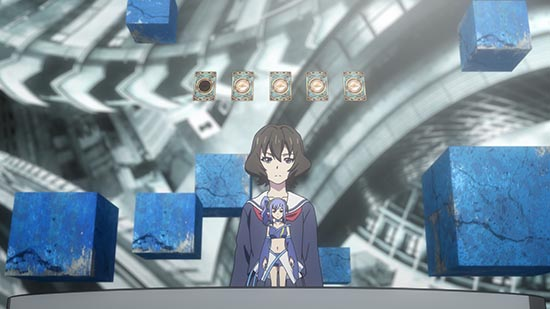 It's Kiyoi.
You can see her LRIG design below.
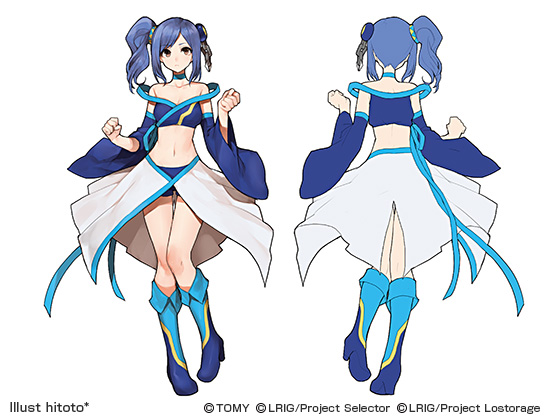
She appears to be the projection of a certain girl.
If you want to know more about her, then please read the Wixoss side story that was published in Ultra Jump, "peeping analyze".
In any case, this battle was actually not much like a battle at all.
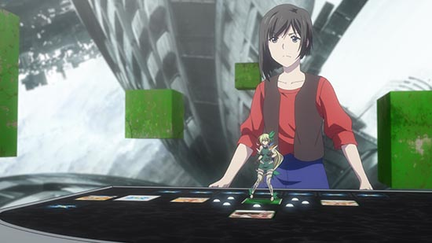 Attack!
Below is the current board.
 Piruluk removes her blue Misfortune Insects, but to what end...?
Piruluk removes her blue Misfortune Insects, but to what end...?
Piruluk had no intention of winning from the start.
She removed her SIGNI so that she would lose and not escape from the battle.
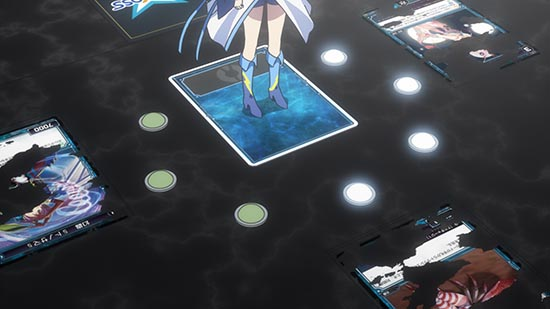 Remove all SIGNI... and Surrender!
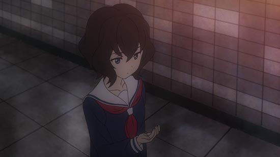 Huh? I think she may have just forgotten something
Shirai-kun's Conflict
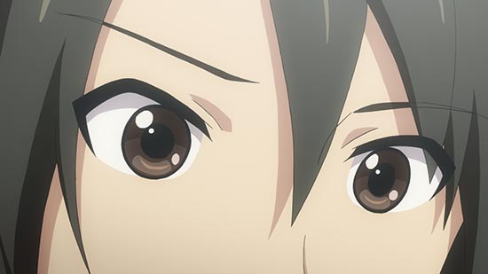 ......
Wait, which girl did I confess to...?
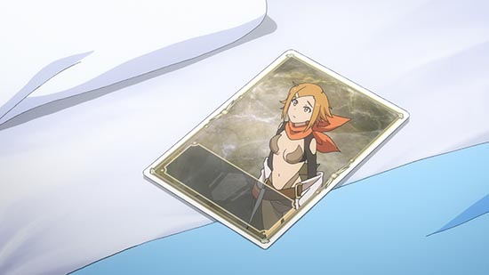 Shou-chan, you never made that memory!
And that's why Shou-chan decided to remember that he had a harem. (I'm kidding)
The Escape ability was finally released!
Dona-chan has the ability to protect herself from attacks.
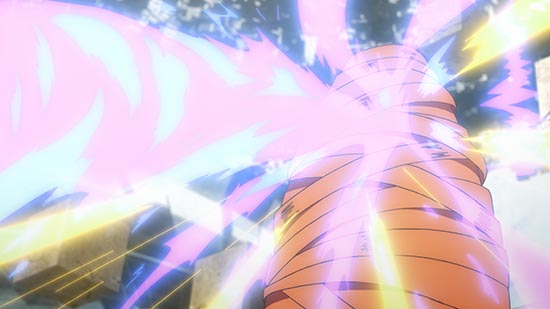 Scarf!
This is about what the field was like.
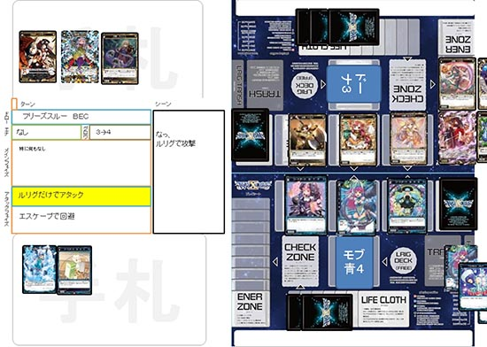 There's a new "Oddity" card on the field. What could it be?
Tanoshii!
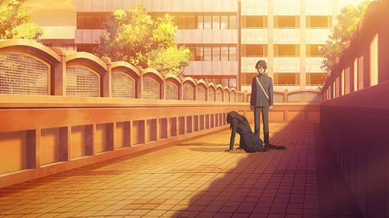 He bows. The shining example of a Selector.
The boy named Shirai Shouhei would henceforth begin to dance atop the palm of the contractor Satomi's hand.
I don't expect him to be able to escape easily.
Girls, be ambitious
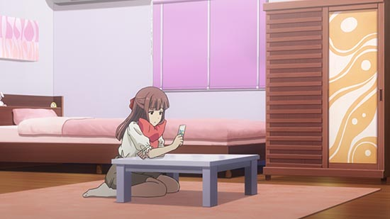
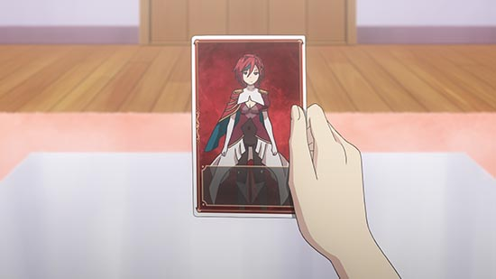 A bit of a girlish and cute style
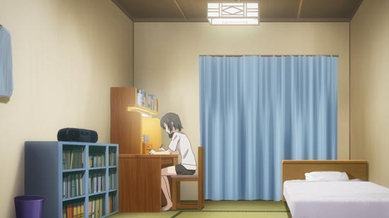
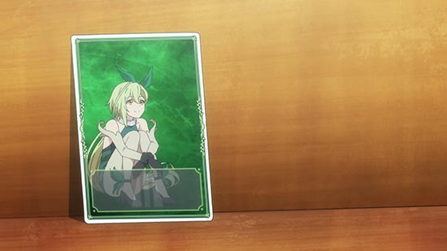 A spats and bare feet, healthy style
I suppose it's due to a difference in personality. I've never been in a high school girl's house before, so I wouldn't know.
So, this story is approaching its end.
As is the story of one character named Mikage Hanna.
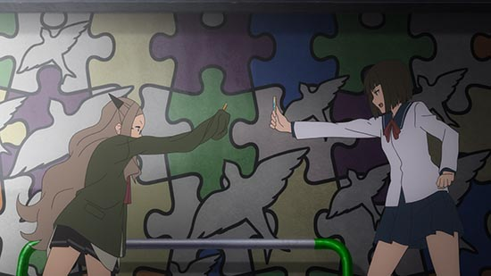 Open!
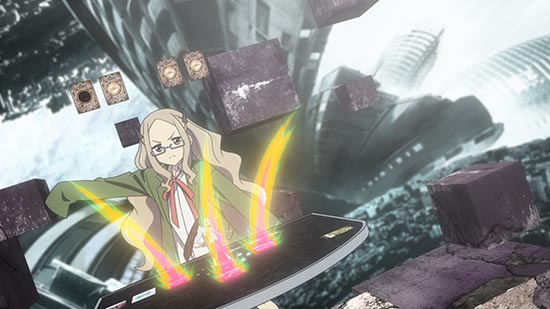 Attack! And Blind!
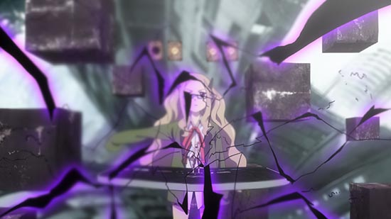 The final blow!
Might as well explain the board.
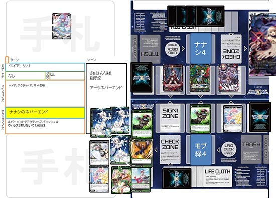 What a sinister advantage. She won with Never End.
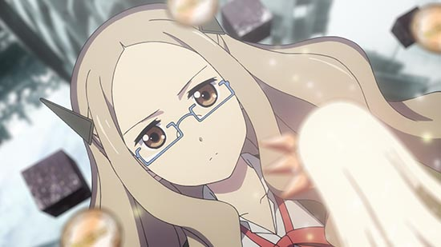 Now then, Hanna-sama, have you any hopes regarding your memories?
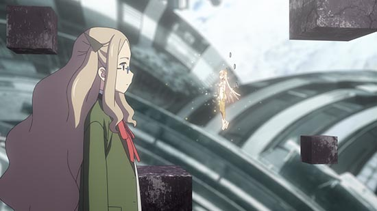 I want to remember the poem I wrote in that old notebook I threw away.
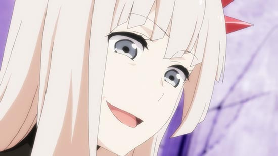 I shall read it for you, Hanna-sama! And in front of all the viewers!
 UWAAAAAAAAAA! STOOOOOOOP!
UWAAAAAAAAAA! STOOOOOOOP!
It's lately become a fad for social bloggers who write daily entries to post their entire diaries on the front page of their sites.
But the thing is, good ideas will stick with you even if you don't write them down, and things you forget are either pointless or "better off being forgotten".
There's no need to force yourself to remember. Seriously.
Now then, the other conclusion was for Yukime.
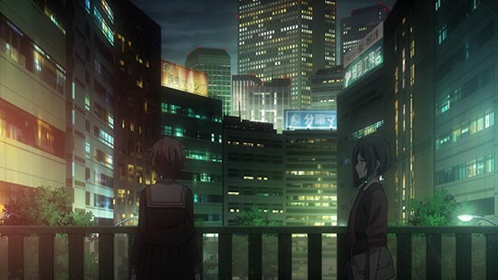 Fried Chicken Massive...?
Yukime expressed the boredom of this world, and then took her leave of it.
I can't help but think that the pedestrian bridges in the Wixoss series are all cursed.
You regain your memories if you win, and your LRIG takes over your body if you lose.
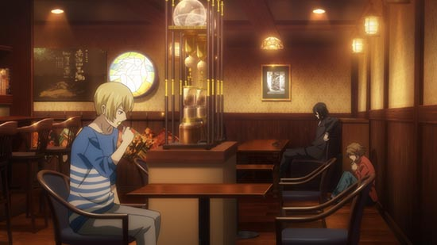 A cut to the cafe, SATOMI
In the end, the chain can't be broken.
Wixoss, as the medium for that chain, will surely be cursed once again.
Well then, airing today will be episode 10. I wonder what battles await us.
New products on sale 12/15!
The newest Wixoss packs will be WX16 Decided Selector and WXD20 Green Cunning!
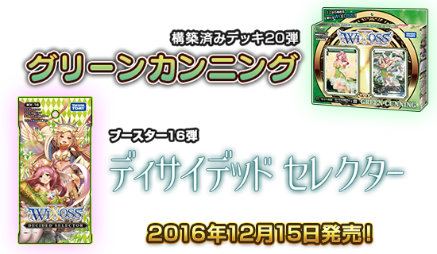
And in the WX16 Another packs, you'll be able to play Werewolf with LRIG cards.
The rules are explained in the below link, so check it out as you play!
You can also find Nanashi's Shadow Art Cards and other rereleased cards!
Please have fun with it!